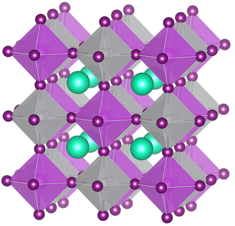

2. Materials Modelling#
John Stewart Bell
Theoretical physicists live in a classical world, looking out into a quantum-mechanical world.
2.1. ⚡️ Crystal electrostatics#
Hello again!
This activity aims to build your understanding of using Python for materials modelling. It will require you to think back to undergraduate lectures on crystallography and materials chemistry. You are encouraged to look up concepts that you are not familiar with.
We will use the computational materials science package pymatgen (https://pymatgen.org). Many Python packages have py at the start of their name. This one is useful to manipulate materials through its application programming interface (API). It also allows you to efficiently access and analyse the crystal structures and calculated properties that are available on Materials Project.
2.1.1. Theoretical background#
The classical electrostatic interaction between point charges is described by Coulomb’s law. For two interacting ions with charge \(q\) and distance \(r\) in a medium of dielectric constant \(\epsilon_0\), the electrostatic energy is defined in the usual way:
Due to the repeating unit cells, the electrostatic energy of a crystal composed of ions is more complicated to compute. Here, the electrostatic energy is defined by a conditionally convergent series. The number of charges grows with the square of the radius used for the summation.

Ewald summation is a numerical technique to calculate the electrostatic potential energy of a crystal. The mathematical trick used is to split the electrostatic summation into real space and Fourier (reciprocal) space terms to ensure convergence at both short and long ranges. The technical background isn’t important now, but is detailed over here if you are curious. The corresponding expression can be written as:
Luckily, we don’t have to solve such an expression by hand. Within pymatgen, the pymatgen.analysis.ewald module contains the EwaldSummation class that enables us to compute the electrostatic energy for any given structure and will be used later.
# Installation of libraries
!pip install pymatgen --quiet
# Import of modules
import pandas as pd # Data manipulation with DataFrames
import numpy as np # Numerical operations
import matplotlib.pyplot as plt # Plotting
from pymatgen.core import Structure, Lattice # Materials analysis for crystal structures
from pymatgen.analysis.ewald import EwaldSummation # Ewald summation for charged systems
from pymatgen.analysis.structure_matcher import StructureMatcher # Structure matching
import itertools # Functions for efficient looping and iteration
2.2. Create a virtual perovskite#
The Structure module contains the Structure class which can be used to represent the unit cell of a crystal. Remember, this is the simplest repeat unit of a crystal that is defined by three unit cell lengths (a,b,c), three angles (\(\alpha,\beta,\gamma\)), and the fractional coordinates of the atoms that it contains.
Below, we will create a model of a cubic perovskite from its spacegroup, Pm3̅m (No. 221). For a cubic unit cell a = b = c and \(\alpha = \beta = \gamma = 90 ^{\circ}\), so we only need to know the length of a.
We will now generate a structure for CsPbI3 from a spacegroup using the class method Structure.from_spacegroup().

This graphic was created using VESTA.
# Create a structure for cubic CsPbI3 using pymatgen
#
# We must define the spacegroup, unit cell (lattice) dimensions,
# chemical species and their coordinates
#
CsPbI3 = Structure.from_spacegroup(
'Pm-3m', # Spacegroup for a cubic perovskite
Lattice.cubic(6.41), # Cubic spacing of 6.41 Å
['Pb2+', 'Cs+', 'I-'], # Unique species of the ABX3 compound
[[0.,0.,0.],[0.5,0.5,0.5],[0.,0.,0.5]] # Fractional atomic coordinates of each site
)
We can display information about the structure that we have created by simply printing it.
# Print the structure details
print()
Code hint
You want to print your structure object CsPbI3Within pymatgen, we can export crystal structures to a variety of file formats using the to method of the Structure class. Some of these include the Crystallographic Information Format (cif) and POSCAR (the standard file format for the density functional theory code VASP). A complete list of file formats can be found in the docs for the Structure class.
The filename argument of the to method needs to be specified to save the file to disk. Only supplying the fmt argument will result in a string being returned.
# Print the file to screen
print('\nThe CIF format for CsPbI3 is shown below:\n')
print(CsPbI3.to(fmt='cif'))
# Export the structure to a CIF
# CsPbI3.to(filename='CsPbI3.cif')
Code hint
You can export a .cif by uncommenting and running the lines above. These files can be opened in a visualiser of your choice (e.g. VESTA or Crystalmaker).We can make an ionic approximation for CsPbI3 and consider that the crystal is formed of Cs+, Pb2+, and I- ions. The crystal is charge neutral overall as the sum of cations (3\(^+\)) is balanced by the sum of anions (3\(^-\)). This model is a reasonable starting point, but it is worth remembering than bonding in real solids is more complicated than a simple classification of “ionic”, “covalent” or “metallic” (e.g. see this perspective).
# Instantiate the EwaldSummation class with our perovskite structure
es = EwaldSummation(CsPbI)
# Print the computed Ewald Sum
print(f' The electrostatic energy of CsPbI3 is {es.total_energy:.2f} eV')
Code hint
Check that the chemical formula is correct.2.3. Create a virtual double perovskite#
A three-component ABX\(_3\) perovskite isn’t always enough to access the properties that we want. There are many ways to expand the crystal chemical space of perovskites. One approach is to double the unit cell from ABX\(_3\) to A\(_2\)B\(_2\)X\(_6\). We can replace one of the B sites by B’ to form a A\(_2\)BB’X\(_6\) compound. It turns out that this is the natural structure of the mineral elpasolite K\(_2\)NaAlF\(_6\) (e.g. see a review on the topic).

A graphic of the double halide perovskite Cs2AgBiI6, where the octahedral B-site is occupied by two distint cations Ag and Bi.
2.3.1. Partial site occupancies#
Each species occupied a distinct atomic site in the original CsPbI3 structure. This structure can be classified as ordered. However, many materials have more complex structures that include some form of disorder in how the species are distributed over crystallographic sites.
For example, imagine a one-dimensional nanowire with frogs and foxes in a 1:1 ratio, where each site has a 50% probabily of being occupied by 🐸 or 🦊. These may form local sequences such as (🐸🦊🐸🦊🐸🦊), (🐸🐸🦊🐸🦊🦊) and (🐸🐸🐸🦊🦊🦊).
This type of disorder in a crystal is termed partial site occupancy, where a mixture of atoms (and sometimes vacancies) occupy the same crystallographic site. It is common in substitutional alloys of the form A\(_{1-x}\)B\(_x\). We can create structures with partial occupancies in pymatgen by specifying the occupancy of the atoms in the structure that we create. If Pb2+ is replaced by an equivalent number of Ag+ and Bi3+ cations, then the charge balance of the crystal is maintained. In terms of charges:
# Replace Pb2+ ions with Ag+ and Bi3+ in CsPbI3
# Create a copy of the structure
Cs2AgBiI6 = CsPbI3.copy()
# Change the first ion (Pb2+) to 0.5Ag+, 0.5Bi3+
Cs2AgBiI6[0] = {'Ag+':0.5, 'Bi3+':0.5}
# Print the structure
print(Cs2AgBiI6)
To model the double perovskite structure, we have substituted both Ag and Bi onto the Pb site in CsPbI3.
The substitution onto the 5-atom unit cell has produced a statistically disordered structure due to Ag and Bi both occupying the same site with partial occupancies of 50%. To use this structure as an input for material modelling, we should make an ordered representation of the structure. This may be a set of ordered configurations that forms an ensemble to represent the disordered nature of the true material.
We can achieve this by creating a supercell. Expanding the unit cell twice in each direction (i.e. \(2\textbf{a} \times 2\textbf{b} \times 2\textbf{c}\)) produces a 40-atom supercell with 8 Pb sites. We could then distribute the 4 Ag and 4 Bi atoms across these 8 Pb sites. This approach introduces a new problem: which sites do we choose to substitute the Ag and Bi atoms? The choice of substitution would affect the structure and energy of the double perovskite, (⍰ ⍰ ⍰ ⍰ ⍰ ⍰ ⍰ ⍰)?
Let’s create a supercell of our CsPbI3 perovskite. We can do this using the .make_supercell() method of the Structure class. Note this is an in-place operation, which means that the operation is applied to the existing Structure object and returns nothing.
# Create a 2a x 2b x 2c supercell of the cubic CsPbI3 structure
supercell = CsPbI3.copy()
supercell.make_supercell(2) # or 2,2,2, i.e. doubled in each direction
# Print the supercell
print(supercell)
Before moving on, think about how you would try distribute the Ag+ and Bi3+ ions on the eight Pb2+ sites, e.g. (🐸🦊🐸🦊🐸🦊🐸🦊) and (🐸🐸🐸🐸🦊🦊🦊🦊).
2.3.2. Structure combinatorics#
To model a disordered crystal at the nanoscale, one approach is to enumerate all of the different atomic configurations in a supercell. We should consider the disordered sites and calculate the possible permutations (arrangements) of the ions.
The number of permutations \(\textit{P}\) for a crystal with \(N\) different sites, which have multiplicities \(m_i\) for \(i = 1 ... N\) for site occupation, can be calculated using the formula for a multi-set permutation:
For our double perovskite structure, try to think of how many permutations are possible in the \(2\textbf{a} \times 2\textbf{b} \times 2\textbf{c}\) supercell with 8 Pb sites, which can be occupied by Ag or Bi.
2.3.3. Permutations of a string#
For calculating permutations of an iterable object, we can use the itertools.permutations() function. A description of this function can be found in itertools docs. Note that the permutations produced using this function might not necessarily be unique.
To understand the idea, we will consider the permutations of the string ‘🐸🦊🦊🙀’.
Before you run the cell block below, think of the number of permutations of ‘🐸🦊🦊🙀’.
# Generate permutations
permutations = itertools.permutations('🐸🦊🦊🙀') # This returns an itertools.permutation object
# Convert the above object to a list
perms_list = list(permutations)
# Print out the list
print(f"We have {len(perms_list)} permutations:")
print(p_list)
Code hint
Print the correct list in the last line.From the above output, we can see that there are duplicate entries from the permutation of 🐸🦊🦊🙀. This happens as itertools considers elements in an iterable to be unique based of their position rather than their value. While this can be easy to spot in the example above, manually trying to filter out duplicate permutations is not an efficient use of our time.
Fortanately, we can reduce the permutations to a list of unique permutations quite simply using the set function.
# Create a set for the permutations
perms_set = set(perms_list)
print(f"We have {len(perms_set)} unique permutations:")
print(perms_set)
We have removed the duplicate entries and returned the unique permutations of the string. Imagine how useful this is when dealing with complex structures containing hundreds of atoms and millions of permutations.
2.4. 🚨 Exercise 2: Atomic permutations#
Coding exercises
The exercises are designed to apply what you have learned with room for creativity. It is fine to discuss solutions with your classmates, but the actual code should not be directly copied.
The completed notebooks are to be submitted at the end of class, but you can revist later, experiment with the code, and follow the further reading suggestions.
2.4.1. Your details#
import numpy as np
# Insert your values
Name = "No Name" # Replace with your name
CID = 123446 # Replace with your College ID (as a numeric value with no leading 0s)
# Set a random seed using the CID value
CID = int(CID)
np.random.seed(CID)
# Print the message
print("This is the work of " + Name + " [CID: " + str(CID) + "]")
2.4.2. Tasks#
You have one task to complete involving the double perovskite Cs2AgBiI6:
Extend the code below to create unique permutations for Ag+ and Bi3+ ions in the perovskite supercell. How many unique permutations are there?
# Create a 2a x 2b x 2c supercell of the cubic CsPbI3 structure
supercell = CsPbI3.copy()
supercell.make_supercell(2) # doubled in each direction
# Place Ag+ and Bi3+ on the Pb2+ atomic sites
for i in range(4):
supercell[i] = 'Ag+'
for i in range(4, 8):
supercell[i] = 'Bi3+'
# Define the set of these B-sites
b_species = supercell.species[0:8]
Self-study (optional)
Generate structures corresponding to the unique permutations of Ag and Bi. This involves substituting the Pb sites in the crystal structure with Ag and Bi. Plot the distribution of electrostatic energies calculated using
EwaldSummation.Visualise the structures of the lowest energy configurations. Is there anything special about the Ag and Bi arrangement? Remember that in thermodynamic equilibrium, these configurations will be the most abundant (recall Boltzmann statistics).
Task hint
One approach for task 2 involves populating a list of structures, e.g. starting from `Structures = []`.Submission
When your notebook is complete, click on the download icon on the top right, select .pdf, save the file and upload it to MyDepartment. If you are using Google Colab, you have to print to pdf.
#Code block
#Comment block
#Code block
#Comment block
2.5. 🌊 Dive deeper#
Level 1: If you are not comfortable with optimisation techniques such as gradient descent, read Chapter 2 of Machine Learning Refined. Otherwise, skip to Chapter 5 on linear regression.
Level 2: An introductory review on the Materials Project published in APL Materials.
Level 3: icet is a powerful Python package for modelling disordered crystals based on the cluster expansion approach.